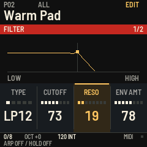
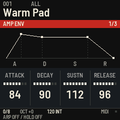
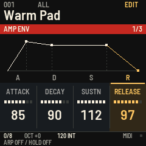
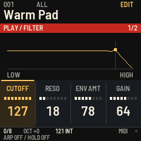
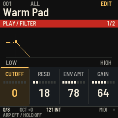
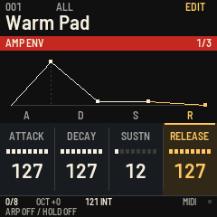
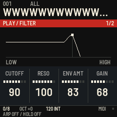
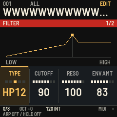
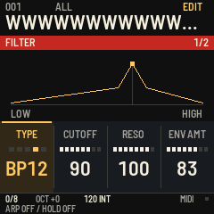
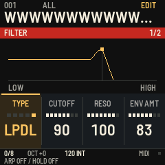

Echte schermuitvoer van de hostsimulator met de bestaande firmwarefonts en parameterkoppelingen.
Elke afbeelding is 240 × 240 pixels. Amber volgt de laatst bediende encoder; de grafiek toont schematisch de instelling.
1× toont de oorspronkelijke resolutie; de fysieke grootte hangt af van je scherm.
DroneARP uitschakelen bij een vastgehouden akkoord laat de bestaande Drone-stand zien.
Andere standen en uitersten

ResonanceFocus volgt de derde encoder.

Nieuwe paginaGeen automatische encoderfocus bij openen.

ReleaseVierde kolom en laatste segment reageren samen.

Maximale waardeDe kolom reageert ook wanneer de grens bereikt is.

Minimale waardeWaarde, balk en filtermarkering passen binnen het scherm.

ADSR-uiterstenDe schematische segmenten blijven op het kleine scherm leesbaar.

Lange patchnaamEen echt geïmporteerde naam wordt op fontbreedte ingekort, met ellipsis.

HoogdoorlaatFiltertype en schematische vorm veranderen samen.

BanddoorlaatEen eigen schematische vorm.

LPDLVolgt de bestaande filterbenadering in de engine.
Deze proef draait uitsluitend in een aparte hostbuild. Andere subpagina’s gebruiken nog de bestaande interface.
De grafieken zijn instellingenbeelden; fase-animatie, opgeslagen referentiemarkeringen en fysieke eenheden volgen in latere stappen.